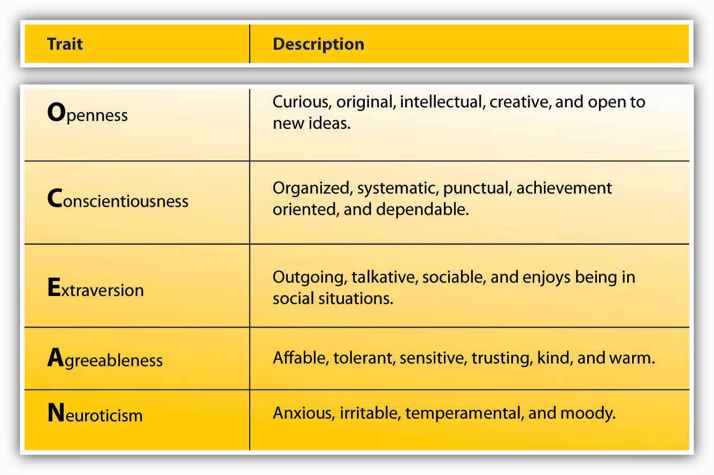
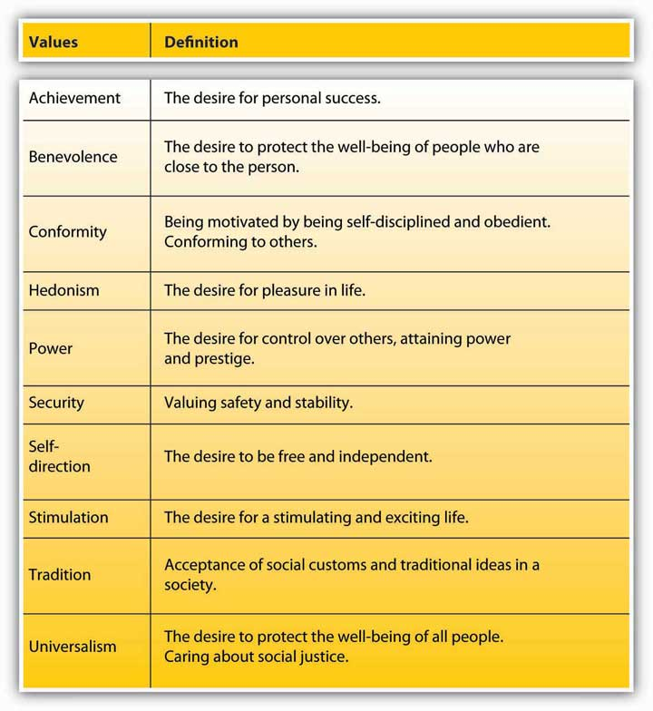

PersonalityThe relatively stable feelings, thoughts, and behavioral patterns a person has. encompasses a person’s relatively stable feelings, thoughts, and behavioral patterns. Each of us has a unique personality that differentiates us from other people, and understanding someone’s personality gives us clues about how that person is likely to act and feel in a variety of situations. To manage effectively, it is helpful to understand the personalities of different employees. Having this knowledge is also useful for placing people into jobs and organizations.
If personality is stable, does this mean that it does not change? You probably remember how you have changed and evolved as a result of your own life experiences, parenting style and attention you have received in early childhood, successes and failures you experienced over the course of your life, and other life events. In fact, personality does change over long periods of time. For example, we tend to become more socially dominant, more conscientious (organized and dependable), and more emotionally stable between the ages of 20 and 40, whereas openness to new experiences tends to decline as we age.Roberts, B. W., Walton, K. E., & Viechtbauer, W. (2006). Patterns of mean-level change in personality traits across the life course: A meta-analysis of longitudinal studies. Psychological Bulletin, 132, 1–25. In other words, even though we treat personality as relatively stable, change occurs. Moreover, even in childhood, our personality matters, and it has lasting consequences for us. For example, studies show that part of our career success and job satisfaction later in life can be explained by our childhood personality.Judge, T. A., & Higgins, C. A. (1999). The big five personality traits, general mental ability, and career success across the life span. Personnel Psychology, 52, 621–652; Staw, B. M., Bell, N. E., & Clausen, J. A. (1986). The dispositional approach to job attitudes: A lifetime longitudinal test. Administrative Science Quarterly, 31, 56–77.
Is our behavior in organizations dependent on our personality? To some extent, yes, and to some extent, no. While we will discuss the effects of personality for employee behavior, you must remember that the relationships we describe are modest correlations. For example, having a sociable and outgoing personality may encourage people to seek friends and prefer social situations. This does not mean that their personality will immediately affect their work behavior. At work, we have a job to do and a role to perform. Therefore, our behavior may be more strongly affected by what is expected of us, as opposed to how we want to behave. Especially in jobs that involve a lot of autonomy, or freedom, personality tends to exert a strong influence on work behavior,Barrick, M. R., & Mount, M. K. (1993). Autonomy as a moderator of the relationships between the big five personality dimensions and job performance. Journal of Applied Psychology, 78, 111–118.something to consider when engaging in Organizing activities such as job design or enrichment.
How many personality traits are there? How do we even know? In every language, there are many words describing a person’s personality. In fact, in the English language, more than 15,000 words describing personality have been identified. When researchers analyzed the traits describing personality characteristics, they realized that many different words were actually pointing to a single dimension of personality. When these words were grouped, five dimensions seemed to emerge, and these explain much of the variation in our personalities.Goldberg, L. R. (1990). An alternative “description of personality”: The big-five factor structure. Journal of Personality & Social Psychology, 59, 1216–1229. These five are not necessarily the only traits out there. There are other, specific traits that represent other dimensions not captured by the Big Five. Still, understanding them gives us a good start for describing personality.
Figure 2.5 The Big Five Personality Traits
Source: Goldberg, L. R. (1990). An alternative “description of personality”: The big-five factor structure. Journal of Personality & Social Psychology, 59, 1216–1229.
As you can see, the Big Five dimensions are openness, conscientiousness, extraversion, agreeableness, and Neuroticism—if you put the initials together, you get the acronym OCEAN. Everyone has some degree of each of these traits; it is the unique configuration of how high a person rates on some traits and how low on others that produces the individual quality we call personality.
OpennessThe degree to which a person is curious, original, intellectual, creative, and open to new ideas. is the degree to which a person is curious, original, intellectual, creative, and open to new ideas. People high in openness seem to thrive in situations that require flexibility and learning new things. They are highly motivated to learn new skills, and they do well in training settings.Barrick, M. R., & Mount, M. K. (1991). The big five personality dimensions and job performance: A meta-analysis. Personnel Psychology, 44, 1–26; Lievens, F., Harris, M. M., Van Keer, E., & Bisqueret, C. (2003). Predicting cross-cultural training performance: The validity of personality, cognitive ability, and dimensions measured by an assessment center and a behavior description interview. Journal of Applied Psychology, 88, 476–489. They also have an advantage when they enter into a new organization. Their open-mindedness leads them to seek a lot of information and feedback about how they are doing and to build relationships, which leads to quicker adjustment to the new job.Wanberg, C. R., & Kammeyer-Mueller, J. D. (2000). Predictors and outcomes of proactivity in the socialization process. Journal of Applied Psychology, 85, 373–385. When given support, they tend to be creative.Baer, M., & Oldham, G. R. (2006). The curvilinear relation between experienced creative time pressure and creativity: Moderating effects of openness to experience and support for creativity. Journal of Applied Psychology, 91, 963–970. Open people are highly adaptable to change, and teams that experience unforeseen changes in their tasks do well if they are populated with people high in openness.LePine, J. A. (2003). Team adaptation and postchange performance: Effects of team composition in terms of members’ cognitive ability and personality. Journal of Applied Psychology, 88, 27–39. Compared with people low in openness, they are also more likely to start their own business.Zhao, H., & Seibert, S. E. (2006). The big five personality dimensions and entrepreneurial status: A meta-analytic review. Journal of Applied Psychology, 91, 259–271. The potential downside is that they may also be prone to becoming more easily bored or impatient with routine.
ConscientiousnessThe degree to which a person is organized, systematic, punctual, achievement-oriented, and dependable. refers to the degree to which a person is organized, systematic, punctual, achievement-oriented, and dependable. Conscientiousness is the one personality trait that uniformly predicts how high a person’s performance will be across a variety of occupations and jobs.Barrick, M. R., & Mount, M. K. (1991). The big five personality dimensions and job performance: A meta-analysis. Personnel Psychology, 44, 1–26. In fact, conscientiousness is the trait most desired by recruiters, and highly conscientious applicants tend to succeed in interviews.Dunn, W. S., Mount, M. K., Barrick, M. R., & Ones, D. S. (1995). Relative importance of personality and general mental ability in managers’ judgments of applicant qualifications. Journal of Applied Psychology, 80, 500–509; Tay, C., Ang, S., & Van Dyne, L. (2006). Personality, biographical characteristics, and job interview success: A longitudinal study of the mediating effects of interviewing self-efficacy and the moderating effects of internal locus of control. Journal of Applied Psychology, 91, 446–454. Once they are hired, conscientious people not only tend to perform well, but they also have higher levels of motivation to perform, lower levels of turnover, lower levels of absenteeism, and higher levels of safety performance at work.Judge, T. A., & Ilies, R. (2002). Relationship of personality to performance motivation: A meta-analytic review. Journal of Applied Psychology, 87, 797–807; Judge, T. A., Martocchio, J. J, & Thoresen, C. J. (1997). Five-factor model of personality and employee absence. Journal of Applied Psychology, 82, 745–755; Wallace, C., & Chen, G. (2006). A multilevel integration of personality, climate, self-regulation, and performance. Personnel Psychology, 59, 529–557; Zimmerman, R. D. (2008). Understanding the impact of personality traits on individuals’ turnover decisions: A meta-analytic path model. Personnel Psychology, 61, 309–348. One’s conscientiousness is related to career success and career satisfaction over time.Judge, T. A., & Higgins, C. A. (1999). The big five personality traits, general mental ability, and career success across the life span. Personnel Psychology, 52, 621–652. Finally, it seems that conscientiousness is a valuable trait for entrepreneurs. Highly conscientious people are more likely to start their own business compared with those who are not conscientious, and their firms have longer survival rates.Certo, S. T., & Certo, S. C. (2005). Spotlight on entrepreneurship. Business Horizons, 48, 271–274; Zhao, H., & Seibert, S. E. (2006). The big five personality dimensions and entrepreneurial status: A meta-analytic review. Journal of Applied Psychology, 91, 259–271. A potential downside is that highly conscientious individuals can be detail-oriented rather than seeing the big picture.
ExtraversionThe degree to which a person is outgoing, talkative, sociable, and enjoys being in social situations. is the degree to which a person is outgoing, talkative, sociable, and enjoys socializing. One of the established findings is that they tend to be effective in jobs involving sales.Barrick, M. R., & Mount, M. K. (1991). The big five personality dimensions and job performance: A meta-analysis. Personnel Psychology, 44, 1–26; Vinchur, A. J., Schippmann, J. S., Switzer, F. S., & Roth, P. L. (1998). A meta-analytic review of predictors of job performance for salespeople. Journal of Applied Psychology, 83, 586–597. Moreover, they tend to be effective as managers and they demonstrate inspirational leadership behaviors.Bauer, T. N., Erdogan, B., Liden, R. C., & Wayne, S. J. (2006). A longitudinal study of the moderating role of extraversion: Leader-member exchange, performance, and turnover during new executive development. Journal of Applied Psychology, 91, 298–310; Bono, J. E., & Judge, T. A. (2004). Personality and transformational and transactional leadership: A meta-analysis. Journal of Applied Psychology, 89, 901–910. extraverts do well in social situations, and, as a result, they tend to be effective in job interviews. Part of this success comes from preparation, as they are likely to use their social network to prepare for the interview.Caldwell, D. F., & Burger, J. M. (1998). Personality characteristics of job applicants and success in screening interviews. Personnel Psychology, 51, 119–136; Tay, C., Ang, S., & Van Dyne, L. (2006). Personality, biographical characteristics, and job interview success: A longitudinal study of the mediating effects of interviewing self-efficacy and the moderating effects of internal locus of control. Journal of Applied Psychology, 91, 446–454. extraverts have an easier time than introverts do when adjusting to a new job. They actively seek information and feedback and build effective relationships, which helps them adjust.Wanberg, C. R., & Kammeyer-Mueller, J. D. (2000). Predictors and outcomes of proactivity in the socialization process. Journal of Applied Psychology, 85, 373–385. Interestingly, extraverts are also found to be happier at work, which may be because of the relationships they build with the people around them and their easier adjustment to a new job.Judge, T. A. Heller, D., & Mount, M. K. (2002). Five-factor model of personality and job satisfaction: A meta-analysis. Journal of Applied Psychology, 87, 530–541. However, they do not necessarily perform well in all jobs; jobs depriving them of social interaction may be a poor fit. Moreover, they are not necessarily model employees. For example, they tend to have higher levels of absenteeism at work, potentially because they may miss work to hang out with or attend to the needs of their friends.Judge, T. A., Martocchio, J. J., & Thoresen, C. J. (1997). Five-factor model of personality and employee absence. Journal of Applied Psychology, 82, 745–755.
AgreeablenessThe degree to which a person is nice, tolerant, sensitive, trusting, kind, and warm. is the degree to which a person is affable, tolerant, sensitive, trusting, kind, and warm. In other words, people who are high in agreeableness are likeable people who get along with others. Not surprisingly, agreeable people help others at work consistently; this helping behavior does not depend on their good mood.Ilies, R., Scott, B. A., & Judge, T. A. (2006). The interactive effects of personal traits and experienced states on intraindividual patterns of citizenship behavior. Academy of Management Journal, 49, 561–575. They are also less likely to retaliate when other people treat them unfairly.Skarlicki, D. P., Folger, R., & Tesluk, P. (1999). Personality as a moderator in the relationship between fairness and retaliation. Academy of Management Journal, 42, 100–108. This may reflect their ability to show empathy and to give people the benefit of the doubt. Agreeable people may be a valuable addition to their teams and may be effective leaders because they create a fair environment when they are in leadership positions.Mayer, D., Nishii, L., Schneider, B., & Goldstein, H. (2007). The precursors and products of justice climates: Group leader antecedents and employee attitudinal consequences. Personnel Psychology, 60, 929–963. At the other end of the spectrum, people low in agreeableness are less likely to show these positive behaviors. Moreover, people who are disagreeable are shown to quit their jobs unexpectedly, perhaps in response to a conflict with a boss or a peer.Zimmerman, R. D. (2008). Understanding the impact of personality traits on individuals’ turnover decisions: A meta-analytic path model. Personnel Psychology, 61, 309–348. If agreeable people are so nice, does this mean that we should only look for agreeable people when hiring? You might expect some jobs to require a low level of agreeableness. Think about it: When hiring a lawyer, would you prefer a kind and gentle person or someone who can stand up to an opponent? People high in agreeableness are also less likely to engage in constructive and change-oriented communication.LePine, J. A., & Van Dyne, L. (2001). Voice and cooperative behavior as contrasting forms of contextual performance: Evidence of differential relationships with big five personality characteristics and cognitive ability. Journal of Applied Psychology, 86, 326–336. Disagreeing with the status quo may create conflict, and agreeable people may avoid creating such conflict, missing an opportunity for constructive change.
NeuroticismThe degree to which a person is anxious, irritable, aggressive, temperamental, and moody. refers to the degree to which a person is anxious, irritable, temperamental, and moody. It is perhaps the only Big Five dimension where scoring high is undesirable. Neurotic people have a tendency to have emotional adjustment problems and habitually experience stress and depression. People very high in Neuroticism experience a number of problems at work. For example, they have trouble forming and maintaining relationships and are less likely to be someone people go to for advice and friendship.Klein, K. J., Beng-Chong, L., Saltz, J. L., & Mayer, D. M. (2004). How do they get there? An examination of the antecedents of centrality in team networks. Academy of Management Journal, 47, 952–963. They tend to be habitually unhappy in their jobs and report high intentions to leave, but they do not necessarily actually leave their jobs.Judge, T. A., Heller, D., & Mount, M. K. (2002). Five-factor model of personality and job satisfaction: A meta-analysis. Journal of Applied Psychology, 87, 530–541; Zimmerman, R. D. (2008). Understanding the impact of personality traits on individuals’ turnover decisions: A meta-analytic path model. Personnel Psychology, 61, 309–348. Being high in Neuroticism seems to be harmful to one’s career, as these employees have lower levels of career success (measured with income and occupational status achieved in one’s career). Finally, if they achieve managerial jobs, they tend to create an unfair climate at work.Mayer, D., Nishii, L., Schneider, B., & Goldstein, H. (2007). The precursors and products of justice climates: Group leader antecedents and employee attitudinal consequences. Personnel Psychology, 60, 929–963.
In contrast, people who are low on Neuroticism—those who have a positive affective disposition—tend to experience positive moods more often than negative moods. They tend to be more satisfied with their jobs and more committed to their companies.Connolly, J. J., & Viswesvaran, C. (2000). The role of affectivity in job satisfaction: A meta-analysis. Personality and Individual Differences, 29, 265–281; Thoresen, C. J., Kaplan, S. A., Barsky, A. P., de Chermont, K., & Warren, C. R. (2003). The affective underpinnings of job perceptions and attitudes: A meta-analytic review and integration. Psychological Bulletin, 129, 914–945. This is not surprising, as people who habitually see the glass as half full will notice the good things in their work environment while those with the opposite character will find more things to complain about. Whether these people are more successful in finding jobs and companies that will make them happy, build better relationships at work that increase their satisfaction and commitment, or simply see their environment as more positive, it seems that low Neuroticism is a strong advantage in the workplace.
Go to http://www.outofservice.com/bigfive to see how you score on these factors.
In addition to the Big Five, researchers have proposed various other dimensions, or traits, of personality. These include self-monitoring, proactive personality, self-esteem, and self-efficacy.
Self-monitoringThe extent to which a person is capable of monitoring one’s actions and appearance in social situations. refers to the extent to which a person is capable of monitoring his or her actions and appearance in social situations. People who are social monitors are social chameleons who understand what the situation demands and act accordingly, while low social monitors tend to act the way they feel.Snyder, M. (1974). Self-monitoring of expressive behavior. Journal of Personality and Social Psychology, 30, 526–537; Snyder, M. (1987). Public Appearances/Public Realities: The Psychology of Self-Monitoring. New York: Freeman. High social monitors are sensitive to the types of behaviors the social environment expects from them. Their ability to modify their behavior according to the demands of the situation they are in and to manage their impressions effectively are great advantages for them.Turnley, W. H., & Bolino, M. C. (2001). Achieving desired images while avoiding undesired images: Exploring the role of self-monitoring in impression management. Journal of Applied Psychology, 86, 351–360. They are rated as higher performers and emerge as leaders.Day, D. V., Schleicher, D. J., Unckless, A. L., & Hiller, N. J. (2002). Self-monitoring personality at work: A meta-analytic investigation of construct validity. Journal of Applied Psychology, 87, 390–401. They are effective in influencing other people and are able to get things done by managing their impressions. As managers, however, they tend to have lower accuracy in evaluating the performance of their employees. It seems that while trying to manage their impressions, they may avoid giving accurate feedback to their subordinates to avoid confrontations, which could hinder a manager’s ability to carry out the Controlling function.Jawahar, I. M. (2001). Attitudes, self-monitoring, and appraisal behaviors. Journal of Applied Psychology, 86, 875–883.
Proactive personalityA person’s inclination to fix what is wrong, change things, and use initiative to solve problems. refers to a person’s inclination to fix what is wrong, change things, and use initiative to solve problems. Instead of waiting to be told what to do, proactive people take action to initiate meaningful change and remove the obstacles they face along the way. Proactive individuals tend to be more successful in their job searches.Brown, D. J., Cober, R. T., Kane, K., Levy, P. E., & Shalhoop, J. (2006). Proactive personality and the successful job search: A field investigation with college graduates. Journal of Applied Psychology, 91, 717–726. They also are more successful over the course of their careers because they use initiative and acquire greater understanding of how the politics within the company work.Seibert, S. E. (1999). Proactive personality and career success. Journal of Applied Psychology, 84, 416–427; Seibert, S. E., Kraimer, M. L., & Crant, M. J. (2001). What do proactive people do? A longitudinal model linking proactive personality and career success. Personnel Psychology, 54, 845–874. Proactive people are valuable assets to their companies because they may have higher levels of performance.Crant, M. J. (1995). The proactive personality scale and objective job performance among real estate agents. Journal of Applied Psychology, 80, 532–537. They adjust to their new jobs quickly because they understand the political environment better and make friends more quickly.Kammeyer-Mueller, J. D., & Wanberg, C. R. (2003). Unwrapping the organizational entry process: Disentangling multiple antecedents and their pathways to adjustment. Journal of Applied Psychology, 88, 779–794; Thompson, J. A. (2005). Proactive personality and job performance: A social capital perspective. Journal of Applied Psychology, 90, 1011–1017. Proactive people are eager to learn and engage in many developmental activities to improve their skills.Major, D. A., Turner, J. E., & Fletcher, T. D. (2006). Linking proactive personality and the big five to motivation to learn and development activity. Journal of Applied Psychology, 91, 927–935. For all their potential, under some circumstances proactive personality may be a liability for a person or an organization. Imagine a person who is proactive but is perceived as too pushy, trying to change things other people are not willing to let go of, or using their initiative to make decisions that do not serve a company’s best interests. Research shows that a proactive person’s success depends on his or her understanding of the company’s core values, ability, and skills to perform the job and ability to assess situational demands correctly.Chan, D. (2006). Interactive effects of situational judgment effectiveness and proactive personality on work perceptions and work outcomes. Journal of Applied Psychology, 91, 475–481; Erdogan, B., & Bauer, T. N. (2005). Enhancing career benefits of employee proactive personality: The role of fit with jobs and organizations. Personnel Psychology, 58, 859–891.
Self-esteemThe degree to which a person has overall positive feelings about oneself. is the degree to which a person has overall positive feelings about himself or herself. People with high self-esteem view themselves in a positive light, are confident, and respect themselves. In contrast, people with low self-esteem experience high levels of self-doubt and question their self-worth. High self-esteem is related to higher levels of satisfaction with one’s job and higher levels of performance on the job.Judge, T. A., & Bono, J. E. (2001). Relationship of core self-evaluations traits—self esteem, generalized self efficacy, locus of control, and emotional stability—with job satisfaction and job performance: A meta-analysis. Journal of Applied Psychology, 86, 80–92. People with low self-esteem are attracted to situations where they will be relatively invisible, such as large companies.Turban, D. B., & Keon, T. L. (1993). Organizational attractiveness: An interactionist perspective. Journal of Applied Psychology, 78, 184–193. Managing employees with low self-esteem may be challenging at times because negative feedback given with the intention of improving performance may be viewed as a negative judgment on their worth as an employee. Therefore, effectively managing employees with relatively low self-esteem requires tact and providing lots of positive feedback when discussing performance incidents.
Which nations have the highest average self-esteem? Researchers asked this question by surveying almost 17,000 individuals across 53 nations, in 28 languages.
On the basis of this survey, these are the top 10 nations in terms of self-reported self-esteem:
The following are the 10 nations with the lowest self-reported self-esteem:
Source: Adapted from information in Denissen, J. J. A., Penke, L., & Schmitt, D. P. (2008, July). Self-esteem reactions to social interactions: Evidence for sociometer mechanisms across days, people, and nations. Journal of Personality & Social Psychology, 95, 181–196; Hitti, M. (2005). Who’s No. 1 in self-esteem? Serbia is tops, Japan ranks lowest, U.S. is no. 6 in global survey. WebMD. Retrieved November 14, 2008, from http://www.webmd.com/skin-beauty/news/20050927/whos-number-1-in-self-esteem; Schmitt, D. P., & Allik, J. (2005). The simultaneous administration of the Rosenberg self-esteem scale in 53 nationals: Culture-specific features of global self-esteem. Journal of Personality and Social Psychology, 89, 623–642.
Self-efficacyA belief that one can perform a specific task successfully. is a belief that one can perform a specific task successfully. Research shows that the belief that we can do something is a good predictor of whether we can actually do it. Self-efficacy is different from other personality traits in that it is job specific. You may have high self-efficacy in being successful academically, but low self-efficacy in relation to your ability to fix your car. At the same time, people have a certain level of generalized self-efficacy, and they have the belief that whatever task or hobby they tackle, they are likely to be successful in it.
Research shows that self-efficacy at work is related to job performance.Bauer, T. N., Bodner, T., Erdogan, B., Truxillo, D. M., & Tucker, J. S. (2007). Newcomer adjustment during organizational socialization: A meta-analytic review of antecedents, outcomes, and methods. Journal of Applied Psychology, 92, 707–721; Judge, T. A., Jackson, C. L., Shaw, J. C., Scott, B. A., & Rich, B. L. (2007). Self-efficacy and work-related performance: The integral role of individual differences. Journal of Applied Psychology, 92, 107–127; Stajkovic, A. D., & Luthans, F. (1998). Self-efficacy and work-related performance: A meta-analysis. Psychological Bulletin, 124, 240–261. This is probably because people with high self-efficacy actually set higher goals for themselves and are more committed to their goals, whereas people with low self-efficacy tend to procrastinate.Phillips, J. M., & Gully, S. M. (1997). Role of goal orientation, ability, need for achievement, and locus of control in the self-efficacy and goal-setting process. Journal of Applied Psychology, 82, 792–802; Steel, P. (2007). The nature of procrastination: A meta-analytic and theoretical review of quintessential self-regulatory failure. Psychological Bulletin, 133, 65–94; Wofford, J. C., Goodwin, V. L., & Premack, S. (1992). Meta-analysis of the antecedents of personal goal level and of the antecedents and consequences of goal commitment. Journal of Management, 18, 595–615. Academic self-efficacy is a good predictor of your grade point average, as well as whether you persist in your studies or drop out of college.Robbins, S. B., Lauver, K., Le, H., Davis, D., Langley, R., & Carlstrom, A. (2004). Do psychosocial and study skill factors predict college outcomes? A meta-analysis. Psychological Bulletin, 130, 261–288.
Is there a way of increasing employee’s self-efficacy? In addition to hiring people who are capable of performing the required job tasks, training people to increase their self-efficacy may be effective. Some people may also respond well to verbal encouragement. By showing that you believe they can be successful and effectively playing the role of cheerleader, a manager may be able to increase self-efficacy beliefs. Empowering people—giving them opportunities to test their skills so that they can see what they are capable of—is also a good way of increasing self-efficacy.Ahearne, M., Mathieu, J., & Rapp, A. (2005). To empower or not to empower your sales force? An empirical examination of the influence of leadership empowerment behavior on customer satisfaction and performance. Journal of Applied Psychology, 90, 945–955.
Personality is a potentially important predictor of work behavior. In job interviews, companies try to assess a candidate’s personality and the potential for a good match, but interviews are only as good as the people conducting them. In fact, interviewers are not particularly good at detecting the best trait that predicts performance: conscientiousness.Barrick, M. R., Patton, G. K., & Haugland, S. N. (2000). Accuracy of interviewer judgments of job applicant personality traits. Personnel Psychology, 53, 925–951.
One method some companies use to improve this match and detect the people who are potentially good job candidates is personality testing. Several companies conduct preemployment personality tests. Companies using them believe that these tests improve the effectiveness of their selection and reduce turnover. For example, Overnight Transportation in Atlanta found that using such tests reduced their on-the-job delinquency by 50%–100%.Emmett, A. (2004, October). Snake oil or science? That’s the raging debate on personality testing. Workforce Management, 83, 90–92; Gale, S. F. (2002, April). Three companies cut turnover with tests. Workforce, 81 (4), 66–69.
Figure 2.7
Companies such as Kronos and Hogan Assessments conduct preemployment personality tests. Kronos Incorporated Headquarters is located in Chelmsford, Massachusetts.
Yet, are these methods good ways of employee selection? Experts have not yet reached an agreement on this subject and the topic is highly controversial. Some experts cite data indicating that personality tests predict performance and other important criteria such as job satisfaction. However, we must understand that how a personality test is used influences its validity. Imagine filling out a personality test in class. You will probably fill it out as honestly as you can. Then, if your instructor correlates your personality scores with your class performance, we could say that the correlation is meaningful. But now imagine that your instructor tells you, before giving you the test, that based on your test scores, you will secure a coveted graduate assistant position, which comes with a tuition waiver and a stipend. In that case, would you still fill out the test honestly or would you try to make your personality look as “good” as possible?
In employee selection, where the employees with the “best” personalities will be the ones receiving a job offer, a complicating factor is that people filling out the survey do not have a strong incentive to be honest. In fact, they have a greater incentive to guess what the job requires and answer the questions in a way they think the company is looking for. As a result, the rankings of the candidates who take the test may be affected by their ability to fake. Some experts believe that this is a serious problem.Morgeson, F. P., Campion, M. A., Dipboye, R. L., Hollenbeck, J. R., Murphy, K., & Schmitt, N. (2007). Reconsidering the use of personality tests in personnel selection contexts. Personnel Psychology, 60, 683–729; Morgeson, F. P., Campion, M. A., Dipboye, R. L., Hollenbeck, J. R., Murphy, K., & Schmitt, N. (2007). Are we getting fooled again? Coming to terms with limitations in the use of personality tests for personnel selection. Personnel Psychology, 60, 1029–1049. Others point out that even with fakingAnswering questions in a way they think the company is looking for. the tests remain valid—the scores are related to job performance.Barrick, M. R., & Mount, M. K. (1996). Effects of impression management and self-deception on the predictive validity of personality constructs. Journal of Applied Psychology, 81, 261–272; Ones, D. S., Dilchert, S., Viswesvaran, C., & Judge, T. A. (2007). In support of personality assessment in organizational settings. Personnel Psychology, 60, 995–1027; Ones, D. S., Viswesvaran, C., & Reiss, A. D. (1996). Role of social desirability in personality testing for personnel selection. Journal of Applied Psychology, 81, 660–679; Tett, R. P., & Christiansen, N. D. (2007). Personality tests at the crossroads: A response to Morgeson, Campion, Dipboye, Hollenbeck, Murphy, and Schmitt (2007). Personnel Psychology, 60, 967–993. It is even possible that the ability to fake is related to a personality trait that increases success at work, such as social monitoring.
Scores on personality self-assessments are distorted for other reasons beyond the fact that some candidates can fake better than others. Do we even know our own personalities? Are we the best person to ask this question? How supervisors, coworkers, and customers see our personality may matter more than how we see ourselves. Therefore, using self-report measures of performance may not be the best way of measuring someone’s personality.Mount, M. K., Barrick, M. R., & Strauss, J. P. (1994). Validity of observer ratings of the big five personality factors. Journal of Applied Psychology, 79, 272–280. We have our blind areas. We may also give “aspirational” answers. If you are asked whether you are honest, you may think “yes, I always have the intention to be honest.” This actually says nothing about your actual level of honesty.
Another problem with using these tests is the uncertain relationship between performance and personality. On the basis of research, personality is not a particularly strong indicator of how a person will perform. According to one estimate, personality only explains about 10%–15% of variation in job performance. Our performance at work depends on many factors, and personality does not seem to be the key factor for performance. In fact, cognitive ability (your overall mental intelligence) is a more powerful predictor of job performance. Instead of personality tests, cognitive ability tests may do a better job of predicting who will be good performers. Personality is a better predictor of job satisfaction and other attitudes, but screening people out on the assumption that they may be unhappy at work is a challenging argument to make in an employee selection context.
In any case, if an organization decides to use these tests for selection, it is important to be aware of their limitations. If they are used together with other tests, such as tests of cognitive abilities, they may contribute to making better decisions. The company should ensure that the test fits the job and actually predicts performance. This is called validating the test. Before giving the test to applicants, the company could give it to existing employees to find out the traits that are most important for success in this particular company and job. Then, in the selection context, the company can pay particular attention to those traits.
Finally, the company also needs to make sure that the test does not discriminate against people on the basis of sex, race, age, disabilities, and other legally protected characteristics. Rent-a-Center experienced legal difficulties when the test they used was found to violate the Americans with Disabilities Act (ADA). The company used the Minnesota Multiphasic Personality Inventory for selection purposes, but this test was developed to diagnose severe mental illnesses; it included items such as “I see things or people around me others do not see.” In effect, the test served the purpose of a clinical evaluation and was discriminating against people with mental illnesses, which is a protected category under ADA.Heller, M. (2005, September). Court ruling that employer’s integrity test violated ADA could open door to litigation. Workforce Management, 84 (9), 74–77.
Figure 2.8 Values Included in Schwartz’s (1992) Value Inventory
ValuesStable life goals people have, reflecting what is most important to them. refer to people’s stable life goals, reflecting what is most important to them. Values are established throughout one’s life as a result of accumulating life experiences, and values tend to be relatively stable.Lusk, E. J., & Oliver, B. L. (1974). Research notes. American manager’s personal value systems-revisited. Academy of Management Journal, 17 (3), 549–554; Rokeach, M. (1973). The Nature of Human Values. New York: Free Press. The values that are important to a person tend to affect the types of decisions they make, how they perceive their environment, and their actual behaviors. Moreover, a person is more likely to accept a job offer when the company possesses the values he or she cares about.Judge, T. A., & Bretz, R. D. (1992). Effects of work values on job choice decisions. Journal of Applied Psychology, 77, 261–271; Ravlin, E. C., & Meglino, B. M. (1987). Effect of values on perception and decision making: A study of alternative work values measures. Journal of Applied Psychology, 72, 666–673. Value attainment is one reason people stay in a company. When a job does not help them attain their values, they are likely to decide to leave if they are dissatisfied with the job.George, J. M., & Jones, G. R. (1996). The experience of work and turnover intentions: Interactive effects of value attainment, job satisfaction, and positive mood. Journal of Applied Psychology, 81, 318–325.
What are the values people care about? As with personality dimensions, researchers have developed several frameworks, or typologies, of values. One of the particularly useful frameworks includes 10 values.Schwartz, S. H. (1992). Universals in the content and structure of values: Theoretical advances and empirical tests in 20 countries. In M. Zanna (Ed.), Advances in Experimental Social Psychology (pp. 1–65). San Diego: Academic Press.
Values a person holds will affect their employment. For example, someone who values stimulation highly may seek jobs that involve fast action and high risk, such as firefighter, police officer, or emergency medicine. Someone who values achievement highly may be likely to become an entrepreneur or intrapreneur. And an individual who values benevolence and universalism may seek work in the nonprofit sector with a charitable organization or in a “helping profession,” such as nursing or social work. Like personality, values have implications for Organizing activities, such as assigning duties to specific jobs or developing the chain of command; employee values are likely to affect how employees respond to changes in the characteristics of their jobs.
In terms of work behaviors, a person is more likely to accept a job offer when the company possesses the values he or she cares about. A firm’s values are often described in the company’s mission and vision statements, an element of the Planning function.Judge, T. A., & Bretz, R. D. (1992). Effects of work values on job choice decisions. Journal of Applied Psychology, 77, 261–271; Ravlin, E. C., & Meglino, B. M. (1987). Effect of values on perception and decision making: A study of alternative work values measures. Journal of Applied Psychology, 72, 666–673. Value attainment is one reason people stay in a company. When a job does not help them attain their values, they are likely to decide to leave if they are also dissatisfied with the job.George, J. M., & Jones, G. R. (1996). The experience of work and turnover intentions: Interactive effects of value attainment, job satisfaction, and positive mood. Journal of Applied Psychology, 81, 318–325.
Personality traits and values are two dimensions on which people differ. Personality is the unique, relatively stable pattern of feelings, thoughts, and behavior that each individual displays. Big Five personality dimensions (openness, conscientiousness, extraversion, agreeableness, and Neuroticism) are important traits; others that are particularly relevant for work behavior include self-efficacy, self-esteem, social monitoring, and proactive personality. While personality is a stronger influence over job attitudes, its relation to job performance is weaker. Some companies use personality testing to screen out candidates. Companies using personality tests are advised to validate their tests and use them to supplement other techniques with greater validity, such as tests of cognitive ability. Companies must also ensure that a test does not discriminate against any protected group. Values express a person’s life goals; they are similar to personality traits in that they are relatively stable over time. In the workplace, a person is more likely to accept a job that provides opportunities for value attainment. People are also more likely to remain in a job and career that satisfy their values.


{kind=link}